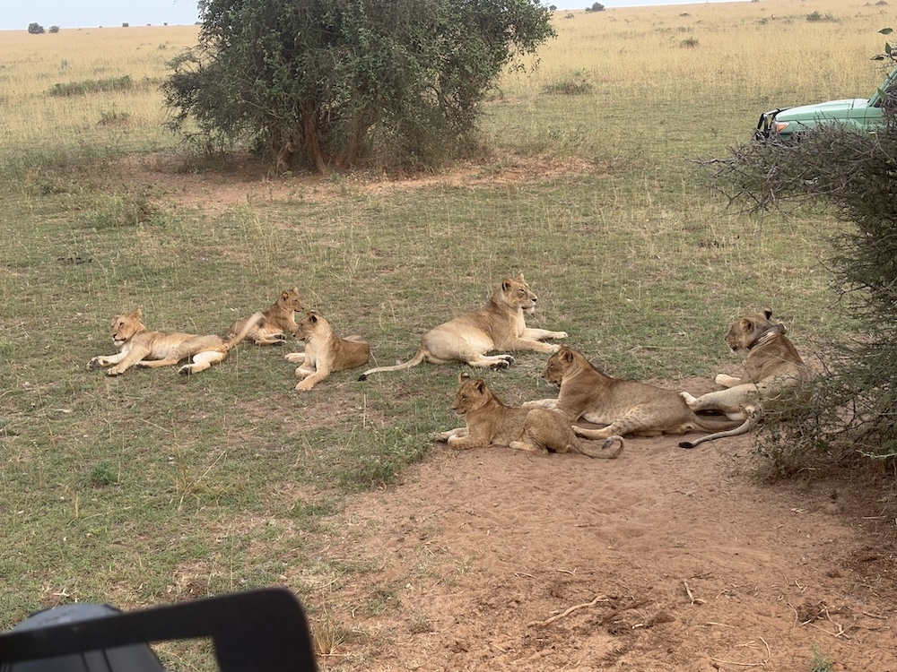
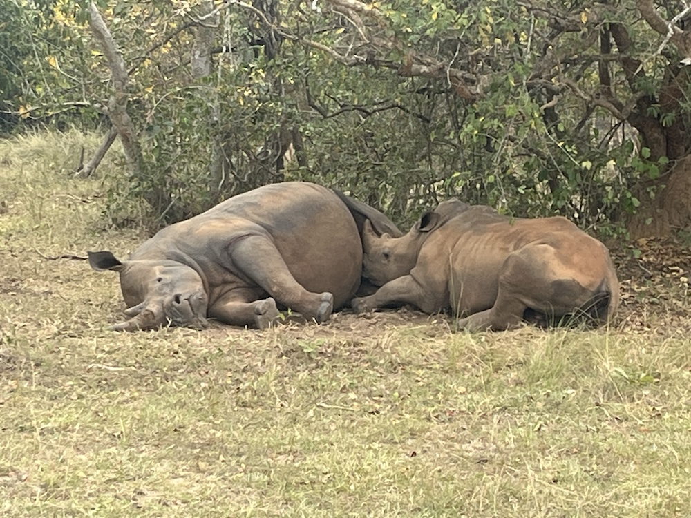
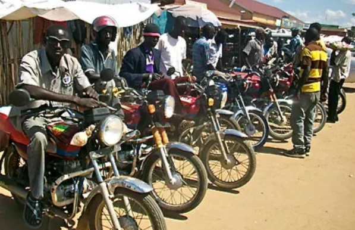
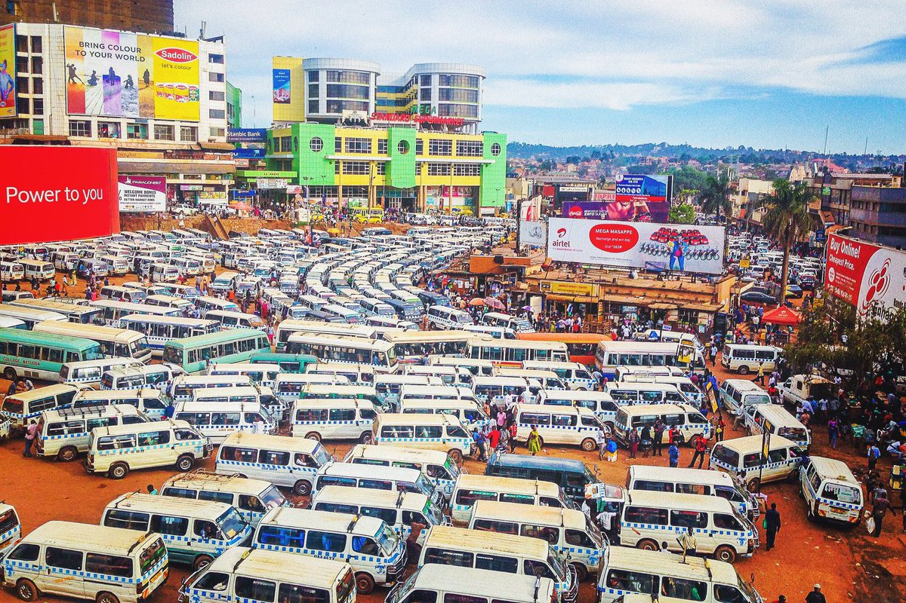
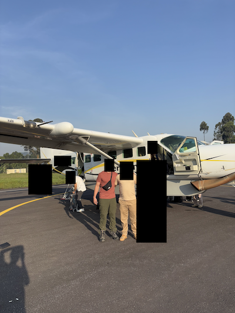
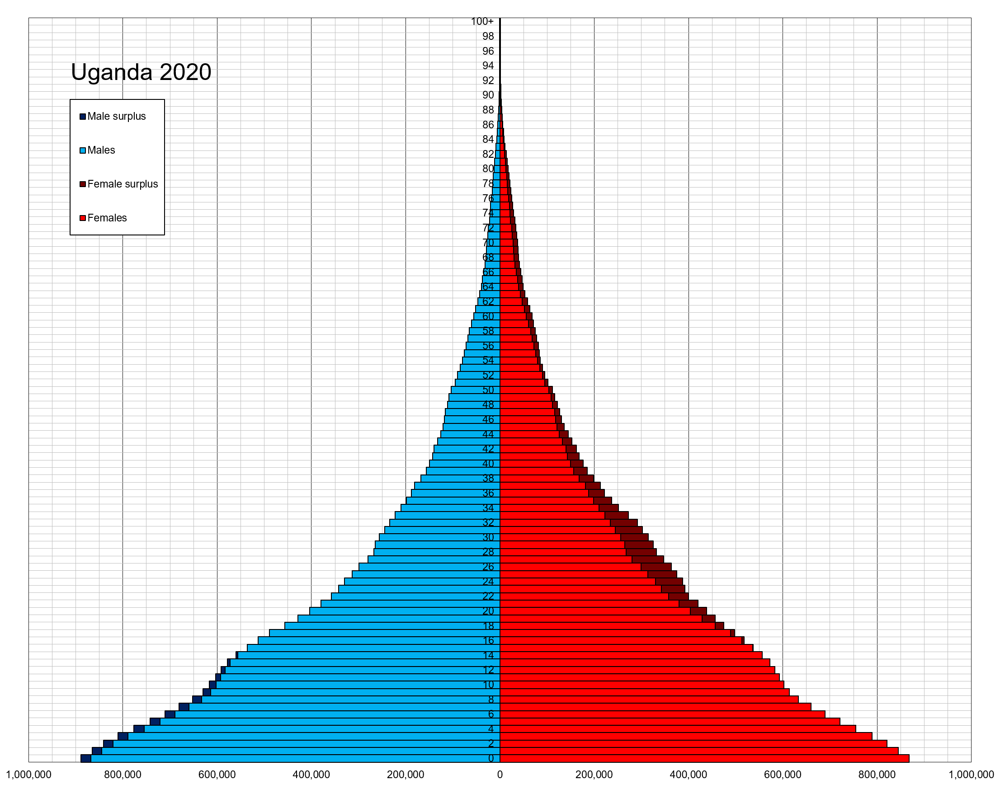
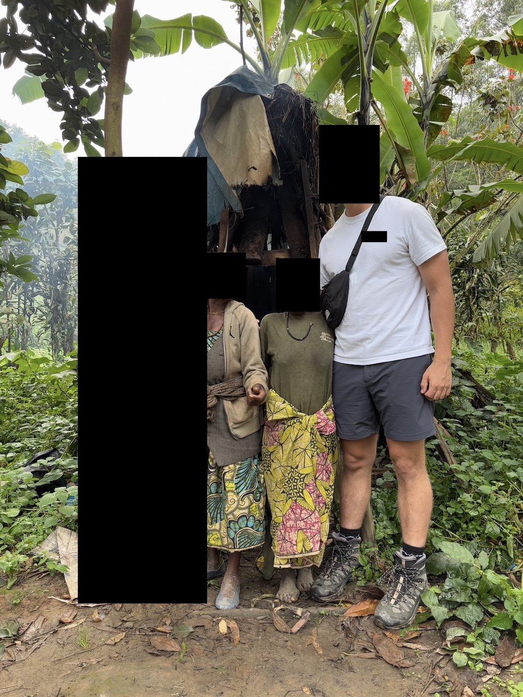

Uganda trip report from 07-21 February 2025.
I spent 12 days in Uganda visiting mostly wildlife-related places, including Murchison Falls, Kibale National Park, Queen Elizabeth National Park, Bwindi Impeneterable Forest, and Kampala. I went with one other person and had an experienced guide the entire time.
Any cultural info that doesn't have a link is based on talking to my guides (guide 1 is G1, guide 2 G2, etc).
We saw a bunch of animals, including (ordered from most common to least, with a coolest encounter or note about some):


Conserving energy is the key to survival and it shows in behavior. The sun is so hot in the middle of the day that animals are forced to take cover in the shade of trees and bushes and do nothing else they risk overheating. Simple grazing is feasible, but running and jumping are effectively prohibited.
I was shocked at the idleness of most villages and towns. So many working-age people just sitting around doing nothing. Hordes of boda boda drivers would sit with each other gossiping about who-knows-what waiting for riders to come up to them; I did not witness them all clamoring to be the chosen driver. People would sit on front porches looking aimlessly. Children would play with each other. Business owners would sit at their storefront waiting patiently for customers. People would just be walking with nothing on their person, so aimlessly by all appearances.

It all just felt so... dead. Except the markets. The only market we went into was in Kampala, but all the others we drove by were pretty much the only thing close to "hustle and bustle" in the villages. This makes sense given how dependent Uganda's economy is on agriculture, but still prompts the question: how do economics work in these villages? D'Exelle & Verschoor's Village networks and entrepreneurial farming in Uganda talks a bit about the farming aspect, but not about anything else. In the States, people who don't do anything are either retired (very unlikely for these people), supported by the government (very unlikely for these people), supported by their family (very unlikely for these people), or just plain poor and get their money doing odd jobs (likely the case here?).
My guess is a) I'm underestimating how poor these people really are, b) my lack of economics knowledge is showing, and c) there's some information I'm missing. Or maybe this is just life: do a little bit of work to make a little bit of money and do nothing outside of that.
The roads here are wild. Maybe not as wild as some places (as my travel partner had recently experienced in the traffic nightmare that is India), but it's still not based on rules: size and convenience win out here, with things like solid yellow lines and traffie signs being mere suggestions. We passed slower traffic wherever and whenever we could so long as the opposite lane was either clear or had a smaller vehicle. These smaller guys, which included us at times, understood the rules and moves over accordingly.
Motorcycles mostly pass on the left, but will still weave in and out of traffic at will if it's the best option for them. We once witnessed about 20 of them hopping up onto the pedestrian walkways to avoid the nightmare that is Kampala rush hour. Anticipation by both parties is key here: the car driver must maintain their line and let the motorcyclist adjust their course accordingly. Unsurprisingly, Uganda has some pretty bad accident statistics as of 2024 and very few wear helmets:
UPF annual crime reports reveal that in the past five (5) years alone [2019-2024], the total number of road traffic crashes increased by 60 percent from 12,805 crashes in 2018 to 20,394 crashes in 2022. Fatal crashes increased by 22.1 percent in the same period. The country also experienced a 77 percent increase in serious cases and a 62.1 percent surge in minor crashes during the same period.
The World Health Organization estimates that road traffic accidents in Uganda cost the country 5 percent of its gross domestic product annually. ... government spends approximately UGX 315.72 billion annually on provision of health care services to road traffic victims across all the regional referral hospitals in the country.
That'd be like the U.S. spending $1.4T on accident-related healthcare alone! Oh wait, we already spend " a total of $1.85 trillion in the value of societal harm, which includes $460 billion in economic costs and $1.4 trillion in quality-of-life costs". Still, I didn't actually see any accidents happen; no T-bones (which is probably impossible due to how slow everything is), no fender benders, no motorcycles scraping the side of cars despite their mirrors being a few inches away.
And just to get a slightly-exaggerated idea of how bad the traffic is, just take a look at Kampala's taxi park. The gross number of taxis is necessary due to the sheer number of destinations offered, but it's still a clusterfuck of exhaust fumes, dust, and gridlock:

Roads between cities are fairly well-paved and well-marked. Roads that lead to villages are rarely paved and give what locals call the "African massage" thanks to their extreme bumpiness. If you're in mountainous areas, there is extremely high exposure to the side. I felt extremely uncomfortable a few times when our jeep was leaning heavily to the right with about 3 ft of road to spare between us and certain death.
You'll also see some interesting things while on the road. A few of my highlights included:
Ugandans know how to take advantage of their rich Western tourists by putting them into awkward situations where they feel obligated to buy something to "appreciate" the people. Apparently it's not just Uganda that does this, but Nigeria too, at least related to bribes (and I'm guessing other African countries). See cumulo nimbus's comment from Matt Lakeman's Nigeria report:
Instead of ‘give me money’ Nigerians tend to say ‘appreciate me.’ ... ‘APPRECIATE ME THREE THOUSAND OR WE ARREST YOU! APPRECIATE ME THREE THOUSAND!'
Various guides around the villages we visited planned the donation part well by:
Here I am, dripped out in Salomon boots, a PFG shirt, and North Face fanny pack... how can I say no? And for stuff you buy, you get the muzungu price, so prepare to spend a bit more than you'd expect. Occasionally they'll say something like "I normally sell it for X, but I'll give it to you for Y" to lessen the already-small, forced blow to the wallet and feelings.
I was expecting to get extorted a bit more than we did, which only happened once. We were stopped at a police checkpoint, they asked my guide for a document that he wasn't required to carry, he offered to show them a picture of it, they said no and that they'll have to hold us unless he buys them both a soda. This happened outside the car away from us. The guard proceeded to come back with a smile on his face and cold soda on his breath to tell us everything is fine and there was just a small misunderstanding. We did see a checkpoint later that had a line of seven or so Ugandas pulled over, all of which were waiting to pay a nice little bribe to their oppressors according to G2.
G1 admitted to minor corruption across Uganda, while G2 said police were quite corrupt and it was a well-paying job to have. While corruption against the locals doesn't surprise me, against tourists does surprise me. I'd expect the government to make it clear that tourists were completely off-limits because of how much they contribute to the economy. Maybe the cops we met didn't care or didn't think they'd get caught.
Uganda's Corruption Perceptions Index score ranks it at 140 out of 180 countries.
Relationships, be it marriage, girlfriend/boyfriend, or just casual dating, is not like the West.
G2 and G3 are adamant that online dating is not used and a bit weird. "Just go meet them out and about [like a normal person]". G2 told me one of his clients paid him to drive two hours (one way) from a national park to a nearby city to meet up with a girl he had matched with while swiping on Tinder. Who knew Uganda could also serve as a sex tourism destination!
A man's wealth plays an especially important role in his attractiveness to common villagers. G2 said that if he were rich (owned his own guiding company, for example), he could stop at any village, point to any woman he wanted that wasn't married, and she'd come with him back to the city to live a life of luxury, including weaves and smartphones, the first two things you buy your girl to show her you truly care about her. The main physical proxy for a man's wealth is the size of his stomach, or his DBF (dad bod factor): high DBF = big stomach = lots of food = able to afford lots of food = rich = attractive = hubby material. It's that simple. I can only imagine the different fatmaxxing methods villagers use to get women to sleep with them.

Dowries (or bride prices, because it goes to the bride's family) still exist in the form of livestock or straight cash. It serves the groom's family well to hide their exact livestock numbers because you bet the bride's family is gonna give them the rich man's price for their priceless-but-not-really daughter. However, the dowry will not be returned to the husband if a divorce happens. This somewhat seems like the Ugandan version of a woman convincing a Western man to not get a prenup.
Domestic violence against women is prevalent according to the National Survey on Violence in Uganda:
almost all Ugandan women and girls (95%) had experienced physical or sexual violence, or both, by partners or non-partners since the age of 15
and based on G2 casually talking about beating women if they step out of line or doing something he's unhappy with.
Infidelity is also widely accepted for men, but not women, based on my discussions and statistics:
24% of women in 2022 reported that their husband or partner had multiple sexual partners while in 2023 ... 34% of men reported having sex with a person who was neither their wife or lived with them.
Men can and often do have girlfriends (they actually also use the term "side chick"!) in addition to their wife, sometimes even outright having multiple wives since polygamy is both legal and part of the culture. The wealthier you are, the more acceptable infidelity and polygamy is to both society and women.
Uganda's STI rate is fairly high at 25,000 per 100k (the U.S. isn't actually too behind at 20,000 per 100k, or 20% less).
G1 and lodge staff claimed that tattoos are completely acceptable and not at all frowned upon. G2 contradicted this, saying that women are considered tainted (my interpretation, not his words) and would never find a husband if they had tattoos and men are viewed as criminals or bayaye, Ugandan street thugs who loiter around doing and contributing nothing. I'm more inclined to believe G2 since I never saw a Ugandan with overt tattoos.
See also A Cultural-Pragmatic Investigation of Tattoos among the Youth in Kampala-Uganda.
Dreadlocks are equally frowned upon and have an extremely negative connotation. If you're a good Ugandan who doesn't like torturing puppies or doing drugs, you keep your hair short or shaved.
Ugandan children are incredibly friendly and autonomous. As our jeep traversed the mountain roadways kids would come running out of the woodworks yelling and waving and jumping to try to get our attention in hopes of getting some candy, or "sweeties" as they call it. I once rolled down my window to say what's up and had an 8-year-old firmly say "give me sweeties" with an unspoken, but heavily implied, "or I'll kick your ass". I did not give him sweeties nor did I get my ass kicked. We high-fived kids out of our jeep window, which G2 said made their day and is something they'd brag about to their parents; we played and danced with them in the villages; we made funny faces from inside the car; we (read: G2) told some kids intentionally blocking the road for a classic sweetie extortion routine that he would beat them if they didn't move... they quickly moved with looks of terror on their face. G2 laughed maniacally as he said "I told them in the local language so they will now fear me for long time".
Their autonomy and independence is nothing like the U.S. Every morning we saw throngs of village children walking to town to go to school by themselves. No parents, no school bus, no bored mom calling the cops complaining about how cruel and heartless and neglectful another parent was being by letting their child walk to school by themselves early in the morning. And they apparently did this every. single. (week)day. School wasn't a short jaunt away. Some kids walked 5 miles (one way, mind you) on uneven, hilly dirt roads to get to school, waking up around 5:00am to make it to school by 7:00am. A single branch of sugar cane was a common lunch. A brutal lifestyle when compared to the lavish ones some kids live; in a vacuum, still pretty damn difficult.
Some parents opt not to send their kids to school in order to get more help on the farm, in the garden, and or around the house. G2 explained that sometimes this is better for the kids—the Ugandan version of the high-school dropout who proceeded to start his own business and get filthy rich while others went to college and made the average American salary—because they can get practical experience early and have a nice headstart compared to their peers.
Most people stay in the same village their entire lives, with education being the primary reason they leave.
They also make a nice triangular population pyramid, which was consistently reflected in every town and village we drove through. Throngs of children walked and played around, easily outnumbering adults by what seemed like three times or more. The obvious reasons that are consistent across Africa are help with labor, poor family planning practices, and high mortality rates.

We met Pygmies—more specifically, the Batwa people—near Bwindi while on a village culture walk. They grew up in the forest among the wildlife and were forced out in 1991 when the Ugandan government declared Bwindi a national park in order to help preserve the wildlife inside, especially the gorillas.

Some interesting notes on them:
adaptation to the significantly lower average levels of ultraviolet light available beneath the canopy of rainforest environments. ... because of reduced access to sunlight, a comparatively smaller amount of anatomically formulated vitamin D is produced, resulting in restricted dietary calcium uptake, and subsequently restricted bone growth and maintenance, resulting in an overall population average skeletal mass near the lowest periphery of the spectrum among anatomically modern humans.
lesser availability of protein-rich food sources in rainforest environments
the often reduced soil-calcium levels in rainforest environments
the caloric expenditure required to traverse rainforest terrain
adaptation associated with rapid reproductive maturation under conditions of early mortality
There is a large Chinese influence in Uganda, namely in the form of technology and infrastructure. Hsiao & Faria's The Intimate China-Africa in Kampala, Uganda gives a wonderful overview of what the relationship was (and probably still is) like in 2018-2020.
Located in downtown Kampala, Nasser Road is known as the forgery capital of Uganda, offering passports, university degrees, permits, you name it. On the outside it's just a bunch of print shops for clothes and paper. On the inside... it's pretty much the same. You gotta know a guy that knows a guy to get the in on the forged stuff, which is actually pretty disappointing because I wanted to get my honorary PhD in Gorilla Studies from the University of Kampala. The way it was talked about made it sound like it was done pretty openly with police just looking the other way. Second on my list was a sick political poster (see link below), but alas, I couldn't find any of those either. I ended up settling for a custom T-shirt.
And it's not just documents that are illegal: the place I bought a custom shirt from had bootleg copies of Windows, Adobe Illustrator, and a few other programs.
Much to my guides' surprise and delight, I was the first non-Ugandan to ever mention Nasser Road to them. (To be fair and honest, I heard it from a friend when I told him I was going to Uganda, so I hereby pass this coveted award to him. You know who you are if you're reading this.)
See also Robocop and Bin Laden in Uganda.
I think a fun vacation idea would be an Amazing Race-style competition with friends, so here's one for Uganda. Illegality and health risks can be mitigated for the more risk-averse.
Ugandan food is too bland for my sugar-craving American tastebuds, but thankfully the lodges recognized this (not just for me, but for everyone) and offered Western-esque food to make everyone feel like home.
No! Bad! Shame! I don't want this! I want to eat Ugandan food in Uganda, not the same shit I can get back home! The Ugandan food they did have available (most places were buffets) were well-trafficked by the tour guides but not the Westerners, so more for me to experience. I had rolexes, matoke, and some other vegetables I can't remember the name of.
Would I go to a Ugandan restaurant in my city by myself? No. Am I glad I tried their food? Yes. Do I recommend you, the reader, try it? Yes.